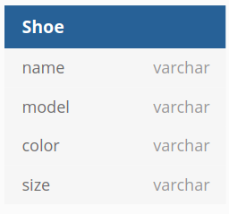
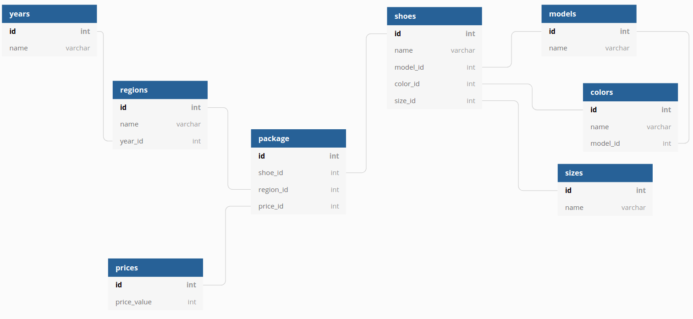

Tomislav Buljević
@tomebuljevic
Process of creating a model of data stored in the database.
| Name | Model | Color | Size |
|---|---|---|---|
| Jazz | Sneaker | Blue / Red / White | 40-45 |
| Hip-Hop | Sneaker | Blue / Green / Red | 40-42 |
| Metal | Sneaker | Black | 40-43 |
| Posh | Oxford | Black / White | 40-46 |
| Student | Oxford | Black / Brown | 40-46 |
| Business | Oxford | Black / Brown | 40-46 |
| Name | Colour | Region | Year | Price |
|---|---|---|---|---|
| Jazz | Blue | East | 2019 | € 20 |
| Jazz | Blue | West | 2019 | € 22 |
| Jazz | Red | East | 2019 | € 15 |
| Jazz | Red | West | 2019 | € 17 |
| Jazz | Blue | East | 2020 | € 18 |
| Jazz | Blue | NorthWest | 2020 | € 20 |
| Jazz | Red | East | 2020 | € 17 |
| Jazz | Red | SouthWest | 2020 | € 19 |
On the search page, the client wants to:
Which element:
Most important elements:
Shoe
Region
Year
Price
All the things are strings!

* Done with https://dbdiagram.ioShoe
Name - unique for each article
Model - unique for each group
Color - how do we determine uniqueness?
Size - unique for each article; a known limited range
One possible solution
"The only constant in life is change"
-- Heraclitus